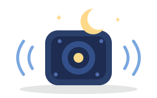

Guides / Drift
Brown noise for sleep: what it is and how to use it
Brown noise is random sound with most of its energy in the low tones, so it sounds like a deep, soft rumble (a waterfall or a strong wind far away) instead of the bright hiss of white noise. Many light sleepers find it easier to fall asleep to, and you can play it free all night on an iPhone with a white noise app such as Drift, at the lowest volume that covers the noise around you.

Brown, white, pink and green noise compared
All four are steady random sound. What changes is how the energy is spread between low and high tones, which changes how it feels to fall asleep to.
| Sounds like | Good for | |
|---|---|---|
| White noise | A bright hiss, like an untuned radio | Covering voices and sharp sounds in a noisy room |
| Pink noise | A softer, balanced static, like steady rain | People who find white noise too sharp |
| Brown noise | A deep rumble, like a waterfall or distant thunder | Light sleepers, low hums, traffic and loud neighbors |
| Green noise | A mellow hush in the middle tones | A calm background that is neither bright nor deep |
You can hear each one side by side in the free white noise generator on this site before you pick one for the night.
Why some people sleep better with brown noise
Most of the sounds that wake people at night are low: traffic, a neighbor's music, an air conditioner, a partner snoring. A sound with plenty of low end blends with them, so the brain stops noticing the change when they start and stop. Brown noise also lacks the high hiss of white noise, which many people describe as tiring after an hour.
Research on colored noise and sleep is still small, and no noise is a treatment for insomnia. The honest advice is to try two or three nights each of brown and white noise and keep the one you fall asleep to faster.
How to play brown noise all night on an iPhone
- Install a sleep sounds app whose sounds play with the screen locked and work offline, so a weak signal never stops it at 3 AM.
- Pick Brown Noise and set the volume just loud enough to cover the noise around you, then turn it down a step.
- Put the phone a little away from your head, on a nightstand or the floor, instead of under the pillow.
- Choose no timer if you wake when the sound stops, or a timer of an hour or two with a fade out if you only need help falling asleep.
- Lock the phone and turn on a Sleep focus so notifications do not light the screen.
Keep the volume safe
- Aim for about the level of a quiet shower or softer. If you have to raise your voice over it, it is too loud.
- Speakers are kinder than earbuds for a whole night. If you need earbuds, use soft sleep earbuds and a low volume.
- For a baby, keep the speaker across the room, well away from the crib, and keep it quiet. Ask your pediatrician if you are unsure.
- Check Settings, Sounds and Haptics, Headphone Safety on an iPhone to see how loud your listening has been.
Drift: free brown noise that plays until morning
Drift is a white noise and sleep sounds app for iPhone and iPad from Graysmith Labs. Brown Noise is free for everyone, with no time limit, and every sound loops without a gap, keeps playing with the screen locked and works offline.
- Open Drift and tap Brown Noise. White Noise, Rain, Ocean, Stream, Fan and the 432 Hz tone are free too.
- Leave the timer off to play all night, or pick 15 minutes, 30 minutes, 1 hour or 2 hours and turn on wind down to fade it out.
- Lock your phone, or leave Sleep mode open to keep the screen dark.
Premium is $1.99 a month for pink and green noise, thirteen more sounds and no ads, and eligible new subscribers get a free week.
Questions
Is brown noise better than white noise for sleep?
Neither is better for everyone. Brown noise is deeper and softer, so many light sleepers and people bothered by low sounds like traffic prefer it; white noise covers voices and sharp sounds better. Try each for a few nights.
Is it safe to sleep with brown noise on all night?
For most adults, yes, at a low volume from a speaker a little away from your head. Keep it at the level of a quiet shower or softer, and use a timer with a fade out if you only need help falling asleep.
What does brown noise sound like?
A deep, steady rumble, like a waterfall, a strong wind far away or the inside of an airplane cabin, with none of the hiss of white noise.
Can I play brown noise on my iPhone for free?
Yes. Drift plays Brown Noise free with no time limit, keeps playing with the screen locked and works offline. iPhone also has a built in Background Sounds setting under Accessibility, Audio and Visual, though it has fewer choices and no sleep timer.
Why is it called brown noise?
It is named after Brownian motion, the random movement of particles, not the color brown. Its energy falls as the pitch rises, which is why it sounds so deep.